Lucas Talandier — independent researcher, Paris
Abstract. No physical photonic system has yet had the parameters that define a continuous-time dissipative-resonator recurrence — pole positions and inter-resonator couplings, the physics that is the memory — trained on the device by gradient-based or gradient-estimating methods.¹ We ask whether such training is feasible for a photonic state-space model on ultra-low-loss silicon nitride, and answer it in simulation: on a pre-registered dissipative substrate model, both hardware-committed methods train the recurrence to within margin of the exact-gradient ceiling on 8/8 seeds at realistic noise. Every threshold was frozen before the run that consumed it.
We derive the SSM↔ring mapping and its realizable pole region, build one shared substrate (finite Q, saturating gain, amplifier noise), and run a four-method bake-off. PAT needs 4.6× fewer device passes than model-free SPSA, but the energy metric inverts the rank: SPSA trains for tens of millijoules all-in where PAT’s digital twin costs 13–44 J. Hamiltonian-echo learning is censored — a quantified feasibility bound, the substrate’s own dissipation defeating the echo. A measured controllability profile (one drive trains ≈3 of 32 rings; four taps recover all 32) makes the input map a first-class design axis.
Against the decisive baseline — calibrate offline, deploy, retrain the readout — in-situ training is statistically indistinguishable to 30% calibration error and under common-mode drift. Its advantage appears only where nothing offline can follow: under uncorrelated per-ring drift it holds a pre-registered 2.42× advantage (a threshold-crossing under a frozen rule; the ratio’s own CI spans [1.7, 4.6]). An end-to-end envelope finds a conditional low-latency niche, gated on the low-power heater class and on integrated-class laser, locking, control, and packaging. One registered prediction — that the damping optimum tracks task memory span — failed, and is reported as failed. The pre-registration ledger, substrate model, and training code are released with the paper.
¹ The nearest neighbor, an in-situ-trained optical recurrent network, trains interferometer weights around an optoelectronic relay; its resonators stay fixed.
Photonic neural networks have learned to train themselves. In feedforward meshes and diffractive processors, on-chip training is now routine enough to have families: model-free perturbative methods [1, 2], hybrid physical-forward/digital-backward methods [3], and in-situ adjoint methods that read gradients from interference [4]. But the systems that most need on-device training — recurrent photonic processors, whose memory lives in the physics — have barely begun to receive it. Photonic reservoir computing deliberately avoids the problem: the recurrence is fixed, random, and only a readout is trained [5]. Where internal parameters of a photonic recurrence have been adjusted at all, it has been by calibration or regime-tuning rather than task-driven training [6], by reinforcement-style search over a readout while the loop stays fixed [7], or in systems whose recurrent state is carried digitally between optical passes [8]. A two-modality literature search with a pre-registered kill-criterion (§8; supplementary) found no demonstration, by any method, of the following:
a continuous-time dissipative-resonator recurrence — pole positions and inter-resonator couplings — trained in situ on the physical device by gradient-based or gradient-estimating methods on a computational task.
That sentence is this program’s target, with each qualifier load-bearing: on a computational task excludes the servo/calibration lineage; physical parameters of the recurrence excludes hybrid-digital state carriage; weight-tied recurrence excludes feedforward meshes folded in time. Refreshes of the search at assembly (2026-07-12) and a page-level verification round (2026-07-27; memos in supplementary) map the boundary against the strongest 2025–26 neighbors, which we dispatch by name because each is the “nearest miss” along one qualifier — and one of them moved the boundary. The nearest neighbor is the monolithic optical recurrent accelerator of Wu et al. [9]: its ORNN chip is trained in situ, by a model-free perturbative method (SPGD, two physical evaluations per update) on a classification task, with a weight-tied mesh applied across wavelength-encoded time steps — to our knowledge the first in-situ-trained optical recurrent network of any kind, and we cite it as such. What it does not do is train the parameters in the boxed sentence: its trained weights are interferometer-mesh voltages, its recurrent state is re-generated electronically at every step through a photodetector–modulator relay, and its resonators are calibrated once and held static — the continuous-time dissipative-resonator recurrence, whose poles and couplings are themselves the memory, remains untrained. The remaining near-misses each fall along one qualifier: on-chip all-photonic backpropagation is now demonstrated — for a feedforward network [10]; microring weight banks have been trained in situ through on-chip optical backprop — as feedforward layers [11]; a time-synthetic fiber-loop network trains in situ — with per-step distinct programmed parameters, i.e. unrolled feedforward rather than a weight-tied recurrence [12]; a modulation-and-weighting microring array trains weights sitting inside an analog recurrent loop on-device — by particle-swarm search, explicitly without gradients [13]; an optoelectronic delay reservoir has had recurrence-defining parameters optimized in situ — by Bayesian search, through a digital feedback loop [14]; and a silicon photonic reservoir equalizer is “trained in hardware” — its readout only, by an evolution strategy, the reservoir couplings fixed by fabrication [15]. No coupled-resonator lattice has had its couplings learned on-device by any method. (The claim is time-indexed: the search refresh re-runs once more immediately before submission, with the registered page-level reads listed in supplementary.)
Two developments make this the right moment to close the gap. On the algorithmic side, deep state-space models showed that linear recurrences with well-placed poles — not gated nonlinear dynamics — carry most of long-sequence performance [16, 17], and the oscillatory LinOSS line extended this to second-order units that are exactly coupled damped oscillators [18, 19]. A lattice of coupled microrings is such a system: poles are ring detunings and losses, couplings are physical couplers, and — decisively for hardware — the LinOSS stability analysis tolerates nonnegative damping, so a lossy-but-high-Q dissipative lattice is in-regime rather than an approximation to a conservative ideal (§2). Damping becomes a design knob, not an embarrassment.
On the platform side, the figure of merit for a dissipative ring recurrence is memory per pass — round-trip loss, hence intrinsic Q. Ultra-low-loss silicon nitride is class-leading and foundry-accessible ($Q_i$ near $10^7$ on multi-project-wafer runs [20]), thermally stable enough for the slow thermo-optic actuation that gradient-estimating training wants, and needs so little gain that the injected amplifier noise stays low (§3). The same choice has a cost we do not hide: SiN’s weak $\chi^{(3)}$ makes the one training route that needs an optical nonlinearity — Hamiltonian-echo learning, whose echo is phase conjugation — harder, not easier, and §4–§5 treat that honestly rather than idealizing it away.
This is a theory-and-simulation (Stage-0) paper, built to be falsified before it is fabricated. Its results are gated by a pre-registration ledger — margins, budgets, fairness conventions, and statistical rules frozen (and PI-signed) before the runs that consume them, with the commit trail shipped as supplementary material (§3.7). Concretely:
Our position on novelty is deliberately narrow. PAT and SPSA are chip-proven; we do not re-validate them. What has never existed is a recurrent, dissipative photonic system trained through its own physics — and a demonstration that the recurrence-defining parameters of a realistic SiN lattice can be so trained, under pre-registered thresholds and honest costing, is the contribution. Whether it pays is a separate question (§7), and this paper reports the current answer to that question as it falls, not as we might wish it.
A structured state-space model (SSM) processes a sequence $u_1, u_2, \dots$ through a linear recurrence $x_{t+1} = \bar A x_t + \bar B u_t$, $y_t = \mathrm{Re}(\bar C x_t) + D u_t$, whose expressive power is set by where the eigenvalues (poles) of $\bar A$ can be placed and how precisely. The diagonal variants that dominate current practice — S4D and DSS [17, 21] — reduce $\bar A$ to a set of independent complex poles, $H(s) = \sum_j c_j b_j/(s - \lambda_j) + D$; the oscillatory LinOSS family [18] instead parameterizes forced, damped harmonic oscillators, and its damped extension D-LinOSS [19] makes the damping of each mode a trainable parameter. Crucially for what follows, the LinOSS construction is valid for any nonnegative-diagonal (dissipative) state matrix: stability does not require conservative dynamics, only that every mode decay. A physical substrate that is lossy but slowly so is therefore in-regime by construction — the loss is not an error term to be fought but the damping parameter of the model class itself. (Where in the damping range the trained optimum actually lands — and what that does to the LinOSS-specific part of this motivation — is measured, not assumed; see §6.)
The mode amplitude $a_j$ of a silicon-nitride microring obeys temporal coupled-mode theory (Haus energy-amplitude convention, $|a|^2$ = stored energy) [22]:
$$\dot a_j = (i\delta_j - \kappa_{\mathrm{tot},j})\,a_j + i\sum_{k\neq j}\mu_{jk}\,a_k + \sqrt{2\kappa_{\mathrm{ext},j}}\,u(t),$$
with $\kappa_{\mathrm{tot},j} = \kappa_{i,j} + 2\kappa_{\mathrm{ext},j}$ the amplitude decay rate (intrinsic + both bus ports of the add–drop registry ring, each loading the mode at $\kappa_\mathrm{ext}$; the drive enters through one port, hence the single $\sqrt{2\kappa_{\mathrm{ext}}}$ injection term), $\delta_j$ the detuning of the drive from the ring resonance, and $\mu_{jk}$ the inter-ring coupling. A single uncoupled ring is therefore exactly one complex Laplace pole,
$$s_j = -\kappa_{\mathrm{tot},j} + i\,\delta_j,$$
— complex, not real, because the optical envelope carries a carrier. A bank of $N$ rings natively realizes a diagonal complex-pole SSM of the S4D/DSS class: one ring per pole, with the injection and readout couplings playing the role of the residues $c_j b_j$. The oscillatory LinOSS unit is recovered exactly as the uncoupled, real-input/output special case: a real damped second-order oscillator is a conjugate pole pair, and the identification against the LinOSS eigenvalue $a_i = -e^{\alpha_i} + i\beta_i$ is
$$e^{\alpha_i} = \kappa_\mathrm{tot}, \qquad \beta_i = \delta.$$
Storing $\alpha_i = \log\kappa_\mathrm{tot}$ enforces the dissipative sign and $\kappa_\mathrm{tot} > 0$ by construction — the physical substrate implements the model’s own stability parameterization. We deliberately claim the broader class and treat LinOSS as its special case, with one consequence made explicit now: published LinOSS/D-LinOSS benchmark results validate only the $\mu = 0$ diagonal reduction, and transfer to the coupled realization is verified in-house against a BPTT-on-substrate ceiling (§5.1) rather than assumed.
Discretization is exact, not approximate: for piecewise-constant input the zero-order-hold (van-Loan matrix-exponential) step gives discrete poles $z = e^{s\,dt}$ to machine precision, with $dt$ the round-trip time. The per-step memory retention is $|z| = e^{-\kappa_\mathrm{tot} dt}$; long memory is literally $|z| \to 1$.
Validation. The mapping is validated at three levels (test-anchored; all thresholds pre-specified): (i) by construction — uncoupled system poles match the CMT reference to $<10^{-3}$ and discrete $|z|$ to $<10^{-9}$; (ii) in the CW limit — the dynamical model’s steady state recovers independently derived static transfer functions with error scaling as $O(1/\mathcal{F})$ (finesse), measured $4.5\times10^{-4}$ at $\mathcal{F} = 1048$ falling to $4.4\times10^{-5}$ at $\mathcal{F} = 10473$; the registry rings sit at $\mathcal{F} \approx 10^3$– $1.5\times10^4$, where the CMT pole is an excellent model; (iii) in the time domain — against an independent RK45 integration, ringdown matches the closed form to $<10^{-9}$ and both pole coordinates ($\kappa$ and $\delta$) re-fitted from the trajectory recover the set values to $<10^{-5}$. All three are internal checks — independent implementations and limits of the same coupled-mode model class — so they certify that the simulator faithfully computes the model it claims, not that the model captures a fabricated device; the latter is a hardware question, scoped honestly in §8.1.
Energy-conserving inter-ring coupling enters as $i\Omega$ with $\Omega$ real-symmetric — an anti-Hermitian addition to the state matrix. It hybridizes the poles (photonic-molecule supermodes) while conserving total damping: the eigenvalues move along the imaginary axis while $\sum_j \mathrm{Re}\,\lambda_j = -\sum_j \kappa_{\mathrm{tot},j}$ is invariant (verified: two-ring beat frequency equals the eigenvalue splitting $2\mu$ to $<2\%$, with a no-beat control at $\mu = 0$). The trainable $\mu_{jk}$ are thus a mild, structured generalization beyond diagonal-$A$ SSMs — off-diagonal terms that reshape frequencies but cannot buy stability or memory. They are also load-bearing for the claim this paper builds toward: inter-ring couplings are recurrence-defining parameters (§2.5).
Where can the poles actually go? Four physical boundaries define the envelope (Fig. F1).
Memory is loss-limited; stability is free. Passive rings satisfy $\kappa_\mathrm{tot} \geq \kappa_i = \omega_0/(2Q_i)$, so the maximum amplitude (state) memory time is $1/\kappa_i = 2Q_i/\omega_0$ — twice the photon-energy lifetime, a convention this paper uses consistently. Across the registered platform range this gives 3.29 ns (329 round trips) at the foundry-conservative corner ($Q_i = 2\times10^6$) to 49.4 ns (4937 round trips) at the class-leading corner ($Q_i = 3\times10^7$): a 15× memory span that is the platform’s dominant figure of merit and the reason this program is on SiN (§1). Net optical gain moves $\kappa_\mathrm{tot} \to 0$ and hence $|z| \to 1$, extending memory past the passive floor at the cost of saturation and amplified-spontaneous-emission noise — deferred to the substrate model (§3).
Frequency is FSR-bounded. The detuning axis aliases at one free spectral range: $|\beta_j\,dt| \leq \pi$ with $dt = 1/\mathrm{FSR}$. The reachable imaginary axis is one FSR wide.
Readout trades against memory. The external coupling sets both memory ($1/\kappa_\mathrm{tot}$, maximized by deep undercoupling) and readability (residue $\propto 2\kappa_\mathrm{ext}$; on-resonance drop efficiency $(2\kappa_\mathrm{ext}/\kappa_\mathrm{tot})^2$, i.e. detector SNR) in opposite directions; their product is bounded by the passive memory length (tested). At the foundry corner the trade runs from 274 round trips at drop efficiency 0.028 (deep undercoupling, $\kappa_\mathrm{ext} = 0.1\kappa_i$) to 16 round trips at 0.91 (deep overcoupling, $10\kappa_i$); the same Pareto shape holds at the class-leading corner with the memory axis scaled ~15×. The operating point is not chosen here: it is pre-registered (§3, PR-4), and $\kappa_\mathrm{ext}$ is itself a pole-real-part actuator, so a trainable-$\kappa_\mathrm{ext}$ policy folds the readout trade into the recurrence training.
Backscatter bounds the one-ring-one-pole abstraction — by roughness, not cleanly by $Q$. Sidewall roughness couples the counter-propagating modes at a coherent rate $\gamma$ that is a fabrication constant, essentially independent of $\kappa_\mathrm{tot}$; the resonance resolves into a standing-wave doublet when $2\gamma \gtrsim \kappa_\mathrm{tot}$ (conservative HWHM criterion; the FWHM criterion shifts every crossover ×2, conclusion unchanged) [23]. Because $\kappa_i$ falls as $Q_i$ rises while $\gamma$ does not, splitting grows with $Q$: from measured SiN rates, a clean damascene-class process ($\gamma/2\pi \approx 12$ MHz [24]) keeps the single-pole picture at the foundry corner ($2\gamma/\kappa_i \approx 0.5$) and breaks it at $Q \approx 4\times10^6$ (HWHM; $8\times10^6$ FWHM), while a rough subtractive process splits 21–75 % of resonances already at $Q_i \lesssim 2.7\times10^6$, with average doublet separations of 180–320 MHz depending on etch mask [25] — i.e. modal-coupling rates $\gamma/2\pi \approx 90$–$160$ MHz under the standard $2\gamma$-separation convention [23], a mapping we state here because the source tabulates separations, not rates (page-verified 2026-07-12). The assembled crossover curve brackets published SiN data points — no single published SiN crossover exists, and no $\gamma$ is published for the specific target processes; primary-source verification is registered before submission. Two consequences propagate forward: the substrate model carries a roughness-gated CW/CCW doublet knob, default ON except at the clean-damascene corner (§3); and a platform tension is on record — the best-memory (highest-$Q$) platforms are the most splitting-prone, while the splitting-safe low-$Q$ foundry corner is memory-poor. Overcoupling suppresses the visible doublet, so the $\kappa_\mathrm{ext}$ policy and the splitting risk are coupled: the max-memory (deep-undercoupled) regime is the most exposed.
The recurrence is defined by the state matrix $M = \mathrm{diag}(-\kappa_{\mathrm{tot},j} + i\delta_j) + i\Omega$. Every entry has a concrete, independently addressable actuator:
| Pole quantity | Physical knob | Actuator | Cost |
|---|---|---|---|
| $\mathrm{Im}$ (frequency) $\delta_j$ | ring resonance offset | thermo-optic heater (trench-isolated), one per ring | low: 1 heater + DAC channel/ring |
| $\mathrm{Re}$ (damping) $\kappa_{\mathrm{tot},j}$ | bus–ring coupling $\kappa_{\mathrm{ext},j}$ | tunable coupler (MZI-assisted gap) | medium: 1–2 heaters/ring |
| same, past the passive floor | per-ring net gain $g_j$ | Er:SiN / III–V pump current | high (gain stage + ASE cost); not required for the claim |
| off-diagonal $\mu_{jk}$ | ring–ring coupling | tunable photonic-molecule coupler (or bus-mediated mesh) | medium–high; topology fixed at fab, strengths trainable |
| residues $B, C$ | injection/readout mesh | thermo-optic MZI mesh | not recurrence-defining |
The last row is the load-bearing exclusion. Training only the injection/readout mesh — the residues — while the poles stay fixed is precisely reservoir computing with a trained linear head, and prior photonic work in that regime (including reinforcement-learning-tuned readouts [7]) does not train the recurrence. The partition this program registers (§4, PR-2/PR-6) is that a method earns the in-situ-training claim only if it updates the pole-defining set $\{\delta_j,\ \kappa_{\mathrm{tot},j},\ \mu_{jk}\}$ on the device, and every method in the bake-off trains the same partition. Notably, the minimal set is gain-free and all-thermo-optic — heaters and tunable couplers only — which is what makes it drift-stable and realistic for perturbative (SPSA-class) training on SiN; no active gain stage is required for the headline claim.
The mapping, then, is not an analogy but an identification: a coupled SiN ring bank is a diagonal-complex-pole SSM with structured coupling, its loss is the model’s damping parameter, its realizable pole region is bounded and known, and every recurrence-defining parameter has a physical actuator. Whether those parameters can be trained through the physics — with realistic gain saturation, ASE noise, and measurement cost — is the question the rest of this paper is built to answer.
The bake-off’s conclusions are comparisons, and comparisons inherit the honesty of their common ground. All four training routes therefore run on a single simulated substrate — one dynamical model, one noise model, one parameter partition, one initialization and data convention (PR-6) — frozen and signed before any estimator existed. Nothing in the substrate was chosen with knowledge of which method it would favor; the freeze order is auditable in the ledger.
The model is the 2N-mode coupled-mode-theory (CMT) lattice of §2: N rings, each carrying a clockwise/counter-clockwise doublet (backscatter coupling is always on, §3.4), with the linear readout followed by direct detection $y(n) = |\sum_j c_j a_j(n)|^2$ — the substrate’s only nonlinearity apart from gain saturation. The trainable (in-situ) partition is fixed by the architecture freeze (PR-2): per-ring detunings $\delta_j$, per-ring tunable bus couplings $\kappa_{\text{ext},j}$, and nearest-neighbor inter-ring couplings $\mu_{j,j+1}$ — the parameters that define the recurrence, as opposed to reservoir-style approaches that train only the readout. The digital head (an 8-lag linear FIR on $y$) and the fixed affine intensity encoder bracket the photonic core; both are identical across methods, and the head’s training cadence is part of the fairness contract.
The per-ring net decay is $\kappa_{\text{net},j} = \kappa_i - g_j + 2\kappa_{\text{ext},j}$: intrinsic loss, minus Er gain, plus the loading of the through/drop ports. Gain follows the M1 static-saturated class: a per-episode operating point $g(\bar P) = g_0/(1+\bar P/P_\text{sat})$, differentiable in the drive statistics and in $\kappa_{\text{ext}}$ (the coupling changes the intracavity power the medium sees), fixed within a rollout — valid under the registered conditions (stationary within-episode drive statistics, pinned train/test power statistics, quasi-static margin $E_\text{sym}/E_\text{sat} \sim 10^{-6}$–$10^{-5}$, all [EV]-anchored; bursty inputs void M1). Every gain-bearing cell runs at the registered ceiling $g_\text{rt} = 0.9\times$ the intrinsic round-trip loss — gain never compensates port loading — so $\kappa_\text{net} = 0.1\kappa_i + 2\kappa_\text{ext}$ at the operating point, with the passive floor ($g=0$) as a labelled sensitivity row. A one-off rate-equation integrator (the salvaged M2) validated the quasi-static reduction at the gating cells.
Amplified spontaneous emission enters as a continuous Langevin term (convention A2), $\langle FF^*\rangle = 2\kappa_g n_\text{sp}\,\delta(t{-}t')$ in photon units, discretized exactly alongside the ZOH/van-Loan propagator, with fresh draws on every physical pass — noise is never shared between passes, methods, or the forward/reverse directions (this single convention carries much of the fairness burden, and one of RHEL’s irreversibility invariants). The headline noise figure is NF = 7.0 dB ($n_\text{sp}=2.5$). The program’s original debt register carried “no measured NF for the flagship Er:Si₃N₄ device” as verification debt #3; the S0.3-0 substrate reconnaissance (2026-06-10) found that premise false — the full text reports “a noise figure of ca. 7 dB … at net gain of >20 dB, limited by coupling losses” [26] — and NF-A = 7.0 dB was frozen to match that measurement (re-verified at page level during assembly, 2026-07-12). The residue of the debt is narrower than its original form: what exists is a single coupling-loss-limited system NF, not an isolated intrinsic amplifier NF, so NF ∈ {3, 5} remain registered sensitivity values.
| cell | platform class | $Q_i$ | N | role |
|---|---|---|---|---|
| C-1 | foundry floor (P-FND) | $2\times10^6$ | 8 | Gate-ii gating cell |
| C-2 | demonstrated MPW class (P-AN800) | $6.8\times10^6$ | 32 | bake-off headline |
| C-3 | aspirational (P-UHQ) | $3\times10^7$ | 128 | labelled sweep axis; never gates |
C-2 is registered as a conservative bound on a demonstrated MPW result (3.3 dB/m, mean $Q_i \approx 10.8$M [20]); our pair ($5.1$ dB/m, $Q_i = 6.8\times10^6$) is strictly worse than the broadest-linewidth device in that paper’s full 249-resonance distribution, whose figures are independently assessed in an invited peer commentary [27]. The residual anchor risk is geometry transfer (the demonstrated loss is achieved by a wide multimode Euler-bend racetrack; our registry ring is single-mode) — flagged by the commentary itself and priced by a registered ×2-loss derate row. At the operating point, C-2 holds ~32 samples of memory at 2 GS/s and packs the 32-ring spectrum in-band; C-1 holds ~9.4 (covering the task’s 7-tap span at the operating point; marginal only at its passive floor).
Surface roughness couples the CW/CCW modes at rate $\gamma$ (11.8 MHz at C-2, damascene-clean process class; 90 MHz at C-1), splitting each ring resonance into a doublet — at high $Q_i$ the splitting is resolved: at C-2/θ₀ the separation clears the §2.4 criterion with $2\gamma/\kappa_\text{net} \approx 2.4$, and at the S0.4-0 lasing-floor calibration point (clause (a), $\kappa_\text{net} = 0.05\,\kappa_i$) the ratio reaches $\gamma/\kappa_\text{net} = 16.6$ — so the substrate is the full $2N$-mode doublet lattice always, not an N-mode idealization with a correction term. (An earlier draft quoted the floor ratio at θ₀; the operating points are distinct and both are given here.) This choice was consequential: the S0.4-0 calibration measured the drive build-up at the lasing floor to be $\times0.42$ of the hold value — the doublet plus chain hybridization quench the single-pole build-up that two independent prior estimates (×37 and ×91) had presumed, mooting both. Modelled imperfections cannot be un-modelled by a reviewer; unmodelled ones are the subject of §8.
The trainable couplings live in a registered box $r_j = \kappa_{\text{ext},j}/\kappa_i \in [0.1, 3]$ (K4), verified to map into the realizable pole region at every cell. With saturating gain the box’s lower edge is unsafe: below $r^* \approx 0.134$ the ring crosses threshold and the linear rollout diverges. The operative bound is the S0.4-0-measured $\mathbf{r_\text{min} = 0.1606}$ (crossing $+$ registered margins), enforced as the training-time clamp; the θ₀ hold value is $r_0 = 0.3$. Damping, in the D-LinOSS sense, is deliberately not a frozen cell: it is the trainable per-ring net loss the estimators explore through $\kappa_\text{ext}$ over this box at fixed $g_\text{rt}$ (the R-ii disposition), characterized separately (§6).
Drive is normalized by an intracavity-energy budget (O2): the registered $\bar P_0 = 1$ mW bus drive corresponds to $E_0 = 1.069\times10^8$ intracavity photons at θ₀, and the digital encoder is not permitted to buy SNR by rescaling drive power against the registered noise cell — the budget is held fixed across methods and across the in-situ/offline comparison. The S0.4-0 calibration confirmed the budget is invariant ($1.000000$) under the four-tap input map below.
A single bus port cannot train a 32-ring chain: with drive on ring 1 only, the per-ring gradient magnitude collapses with hop distance — an effective participating dimension of ≈3 of 32 rings. The registered remedy is a measured, minimal multi-point input map: S0.4-0 searched tap sets under a pre-registered every-ring controllability gate (each ring’s gradient $\ge 10^{-3}$ of the maximum, min over five drive seeds) and resolved B = taps {3, 12, 21, 30} at $K=4$ (32/32 rings pass, worst $1.42\times10^{-3}$; no $K\le3$ set passes). The four E/O drive channels this costs are charged to the systems envelope (§7) — multi-point drive raises exactly the conversion overhead the envelope exists to price. Two protocol rulings made during the measurement (gate referenced to the maximum ring; min-over-seeds robustness) both strengthen the gate and are recorded for review. One anchor risk stays open (vii): the calibration’s floor numbers are computed on-resonance; a detuned ring at $r_\text{min}$ can reach $\kappa_\text{net} = -0.48\kappa_i$ under worst-case de-saturation, and a δ-aware floor would sit at $0.2547$ — the conformance check that would settle it was measured to be not-cheap and is carried as a labelled risk, not silently absorbed. A pre-registered endpoint diagnostic (PR-18; S0.11) later measured the label against the trained solutions themselves: under the same δ-aware hypothetical, three of eight SPSA seeds end with at least one ring in the super-threshold corner (min $\kappa_\text{net} = -0.06\,\kappa_i$; rings at $r = 0.17$–$0.22$ with $|\delta| = 0.65$–$1.0\,\kappa_i$), while PAT’s endpoints stay sub-threshold ($+0.31\,\kappa_i$ at achieved detunings) and both §6 arms sit far from the corner ($\geq +1.3\,\kappa_i$). The exposure lives in the hypothetical, not the runs (the as-built substrate is δ-independent in gain and never lases, and the measured doublet quench of §3.4 suggests the single-pole build-up it assumes is pessimistic) — but the label is no longer vacuous, and every exposed endpoint sits below the δ-aware clamp $r \approx 0.2547$, which is therefore the concrete mitigation Stage 1 inherits. Mid-training trajectories are not stored; the measurement binds endpoints only.
Every consequential choice above — the gain class and its validity conditions, the NF axis, the cells, the box, the clamp, the input map, the drive budget — was written into a pre-registration ledger, in most cases signed by the PI, before the run that consumed it, with measured deferrals returned to the ledger as dated addenda (the $E_0$ value, $r_\text{min}$, the resolved input map, the budget $B$, the BPTT ceiling). Supersessions retain the superseded text. The ledger, its review trail (independent adversarial review through 2026-07-06; single-session self-review thereafter, disclosed), and the frozen-before-run commit hashes ship as supplementary material. We treat this as part of the method: a bake-off whose thresholds, budgets, and fairness conventions are set after seeing results would not support the claims of §5.
The fairness contract (PR-6) fixes one invariant above all: a training method may obtain gradient information only from simulated device passes on the shared substrate, with fresh noise on every pass. Autodifferentiation through the substrate is reserved for the BPTT reference — the ceiling, never a contestant. All methods share, per seed: the same initialization (detunings spread over $[-\kappa_i, \kappa_i]$, $r_0 = 0.3$, connected chain $\mu_c = 0.3\kappa_i$), the same data stream (a function of seed and iteration only), the same head cadence, the same clamp to the operative box, and the same pre-registered hyperparameters. Cost is counted in physical device passes, any direction (PR-7): one pass = one sequence through the substrate. Digital compute (a twin’s forward/backward, the head update) lives on a side-ledger that is always co-reported and never folded into the rank — a method that saves device passes by spending digital FLOPs has a real but different advantage than a model-free one, and merging the ledgers would hide exactly the distinction the comparison exists to draw.
Simultaneous-perturbation stochastic approximation [1] perturbs the entire in-situ partition by $\pm c\Delta$ (a random sign vector), measures the scalar loss twice, and forms a descent direction from the difference: 2 device passes per update, no model, no twin, no added hardware beyond the plant’s own actuators and its single readout (the simplest row of the hardware ledger, supplementary note N2). Perturbations at the clamp boundary are one-sided. SPSA is chip-demonstrated [2] and inherits the crosstalk-robustness observed in our prior thermo-optic work [28]; its known weakness — gradient variance growing with parameter count — is precisely what the sample-efficiency metric prices.
Physics-aware training [3] evaluates the loss on the measured physical output and takes the parameter gradient through a differentiable digital twin at the commanded parameters: 1 device pass per update, plus a twin forward/backward on the digital ledger. PAT’s value proposition is exactly this exchange, and its honesty hinges on the twin being imperfect in a registered way. The twin-mismatch protocol (PR-5) freezes three families: M-par — 5%-class parametric calibration errors on the constants and actuation maps ($\kappa_i{+}5\%$, $\gamma{+}5\%$, actuation ×1.05/×0.95, detuning offset $0.05\kappa_i$, a loose gain pair ×1.10/×0.75 reflecting debt #3); M-struct — a structural omission (the twin drops the gain’s dependence on the trained coupling, the one channel a fixed-gain model cannot see); and M-noise (always on) — the twin is noiseless. The headline PAT is the composed mismatch; the decomposition is reported separately (§5.6). A perfect-twin gate verifies the implementation: with mismatch off, PAT’s gradient equals BPTT’s to machine precision.
The adjoint route extends feedforward in-situ backpropagation [4] to the time-domain cavity setting: the error field is physically propagated backward through the same dissipative substrate, and the gradient is read from forward/adjoint interference. No recurrent photonic demonstration of this pass exists (verification debt #4); the simulation charges it as if realizable — 1 forward + 1 adjoint = 2 device passes per update, zero digital — and quarantines the realizability question in the hardware ledger (circulators, phase-coherent injection, separability of the counter-propagating field from the backscatter doublet). The simulated adjoint pass is honest about two physical limits: it carries fresh noise (the reverse pass is its own noisy traversal), and the saturating gain is frozen at its operating-point value in the backward linearization — a counter-propagating field experiences the medium’s saturation state but cannot realize the $\partial g/\partial\kappa_\text{ext}$ self-consistency channel. Both simplifications flatter the adjoint (a third, an additive noise term on the adjoint field itself, awaits an error-launch power convention that is unresolved hardware design), so the bake-off’s adjoint arm is an optimistic bound and is labelled as such wherever it appears. Floor checks: on the fixed-gain plane the adjoint gradient equals BPTT to machine precision; in saturating mode the frozen-gain approximation costs 0.6% of gradient direction at C-1 but 7.5% at C-2 — the one method-relevant quantity we measured to grow with cell size.
Recurrent Hamiltonian echo learning [29, 30] trains by time-reversal: evolve forward; apply a single conjugation to the state snapshot (for optical fields, phase conjugation); evolve again through the same physics with the input replayed time-reversed and a small error nudge injected continuously; the gradient is the symmetric finite difference of $\nabla_\theta H$ between a $+\varepsilon$ and a $-\varepsilon$ echo. Three consequences of taking the published algorithm seriously on a dissipative substrate, each registered before the runs: (i) the count is 3 passes in the Hamiltonian limit but 4 operationally (2 forward + 2 echo) — the echo does not return the state re-usable, and state cloning is unphysical (PR-7.1); (ii) the conjugation fires twice per update, paying its penalty chain independently each time; (iii) the update rule reads only the coherent generator, so the dissipative channel of $\kappa_\text{ext}$ is structurally invisible to it.
The echo’s physical primitive is modelled concretely (PR-11), not as an idealized operator: a $\chi^{(3)}$ four-wave-mixing conjugation stage with the full penalty chain — extraction through the ring ports ($\eta_\text{ex} = 2\kappa_\text{ext}/\kappa_\text{net} = 0.86$ at θ₀), single-pass spiral conversion ($(\gamma_\text{nl} P_p L)^2 \approx -16.7$ dB at 0.3 W pump, 0.5 m; $\gamma_\text{nl} \approx 0.97\,\text{W}^{-1}\text{m}^{-1}$ for tight-confinement SiN [31]), and timing decay — totalling −22.4 dB per conjugation (Fig. S3), plus the phase-insensitive parametric quantum floor. A page-level check at assembly found published ultra-low-loss-geometry demonstrations at $\gamma \approx 0.29$–$0.51\,\text{W}^{-1} \text{m}^{-1}$ (with CW power handling demonstrated to 7 W) [31]; our 0.97 assumes a tighter-confinement spiral than those demos, so the frozen chain is, if anything, optimistic for RHEL — at the measured ULL values the conjugation penalty deepens by a further ~6 dB. The direction only strengthens §5.4’s conclusion, which the idealized-conjugator control shows does not hinge on the chain at all. The quantum floor itself was measured negligible at the $10^5$-photon state scale (as registered-to-measure), with pump-transfer excess included. Because the ring fields overlap spectrally, conjugating N rings needs N pumped arms: ≈9.6 W of on-chip pump at the headline cell, charged to the envelope. Off-chip conjugation was priced and excluded (the state decays in transit: amplitude survival 0.12–0.54 at 10 ns for C-1/C-2; there is no storage primitive to wait out a conjugator). Three irreversibility invariants bind the implementation and are test-enforced: independent forward/echo noise streams (no common-RNG reversal); no loss-sign flip (the echo traverses the same dissipative lattice); gain injects fresh ASE in the echo too — and the echo of a noisy forward must not recover the noiseless state. The floor check completes the picture: as dissipation is removed, the implemented RHEL gradient converges to the exact reference (cosine $\to 1.0000$), so whatever §5.4 finds is the physics, not the code.
The four routes are parallel in simulation, singular in hardware: the Stage-1 chip is committed to the two chip-demonstrated workhorses (PAT, SPSA) regardless of the bake-off’s ranking, and an exact-gradient route can earn a later hardware slot only by clearly beating both on a pre-registered outcome criterion (PR-9; “exactness” is struck from the promotion menu). §5 reports how this resolved.
Every threshold in this section was fixed in the ledger before the run it judges, in the order the runs consumed them: the fairness contract, cost metric, and twin-mismatch families (PR-6/7/5) at the start of S0.4; the target rule, statistical plan, and gate semantics (PR-3/8/9) at S0.4-close; and the two measured numbers a rule cannot supply — the budget and the ceiling — as dated addenda committed before any contestant ran. We state this not as ceremony but because the central claim is a threshold-crossing claim, and a threshold chosen after seeing the curve is worthless.
The reference is backpropagation-through-time on the substrate itself (BPTT), which is not a physical training method — it reads gradients the device cannot expose — and is the strongest gradient access the substrate model admits. It is a budget-scoped reference, not a capacity ceiling: what BPTT reaches within a stated update budget is what training can be held to at that budget — and the §17.8 diagnostic below measured BPTT still improving past the bake-off budget, so no asymptotic-capacity claim is made, and none is needed. On the headline cell (C-2: 32 rings, $Q_i = 6.8\times10^6$; 4-PAM channel equalization at 28 dB, §3), BPTT drives the symbol-error rate to a median of $5.2\times10^{-4}$ across eight seeds (seven of eight at $5\times10^{-4}$ — two errors in the 3840-symbol evaluation set, the quantization floor). Because that floor is too coarse for comparisons between near-ceiling arms — a two-symbol band can manufacture or erase a “statistically real” difference — every such comparison in this section (§5.5, §5.6) was re-scored under a pre-registered fine protocol (eval-F, PR-17: the same reserved held-out streams extended to 99,840 scored symbols, per-seed resolution $1.0\times10^{-5}$), with the frozen coarse protocol remaining the protocol of record for every gate, target, and ranking verdict, and both reported wherever they differ. At eval-F the BPTT reference itself reads $9.8\times10^{-4}$ (the coarse $5.2\times10^{-4}$ was a lucky-two-errors reading — an illustration of exactly the floor hazard). One scope note, so no reader has to discover it: this reference is protocol-local. It is measured under the bake-off contract — 12,000 updates at the registered cadence — and it bounds the §5.3 ranking, which runs under that same contract. The follow-up experiments of §5.5 run their own frozen specification (PR-5 §E) with a $2.6\times$ larger update budget (31,600), and at eval-F their trained arms land slightly below the 12,000-update number ($8.4$–$9.0\times10^{-4}$ vs $9.8\times10^{-4}$; the paired inversion is within seed noise, CI $[-0.1, +3.1]\times10^{-4}$ including zero). A reference matched to the follow-up budget — BPTT at 31,600 updates, registered as a review-added diagnostic with its expected direction stated in advance (PR-17 §17.8) — lands at $8.1\times10^{-4}$ (8 seeds, per-seed $7.3$–$8.9\times10^{-4}$), and it, not the bake-off number, is the reference line drawn in Fig. F8. We state the margin rather than leave it to be measured: the restoration of the expected ordering is median-level and thin — the matched reference sits $0.3$–$0.9\times10^{-4}$ below the calibration-sweep arms and one per-seed resolution unit below the drift arm’s time-integrated $8.2\times10^{-4}$, with its per-seed spread overlapping the arms’ — a scope statement (with matched budget, no physical arm sits meaningfully below exact gradients), not a separation. An arm sitting below the 12,000-update number is a budget effect, not a physical estimator beating exact gradients. One implementation erratum in the eval-F tooling (an evaluation-normalization inconsistency, caught the same day by its chance-level signature, registered, fixed under a machine-precision gate test, and re-run) is documented in the ledger (PR-17 §17.7). The frozen substrate has ample capacity for the task; the open question is purely which physical training routes reach it, and at what cost. The pre-registered target follows mechanically: a method reaches target if its held-out SER falls to $\text{SER}_\text{target} = 1.25\times\text{ceiling} + 0.005 = 5.65\times 10^{-3}$ at any evaluation point within the device-pass budget (the additive guard dominates at a floor-level ceiling, by design — PR-3 §B; had the rule consumed the eval-F ceiling instead, the target would be $6.23\times10^{-3}$ and no reach-target verdict in this paper changes). The budget $B = 252{,}800$ device passes is twice the BPTT convergence point measured in a seed-7 sizing pilot excluded from the eight scored seeds — where “convergence” means the pilot’s registered flatness rule, a budget-local criterion: the §17.8 matched run kept improving at the fine floor past that point, which the flatness rule (defined on the coarse trace) could not resolve.
A note this cell settles for free: the ceiling is identical under fixed-gain and saturating-gain substrate models ($\Delta_{M3}=0$). The gain-model class — the largest modelling uncertainty in the substrate (§3) — cannot move the achievable accuracy, so it cannot flip any ranking below. The pre-registered M3 sensitivity trigger is therefore un-triggerable at this cell.
Two decompositions of the Stage-0 gate were pre-registered (PR-9). Capacity (ii-a): the ceiling must clear a task-utility floor set at half the readout-only error — the reservoir baseline that freezes the recurrence and trains only the digital head. The baseline stalls at $2.2\times10^{-2}$ (scored at the coarse protocol; at ~85 errors per 3,840-symbol evaluation it sits far from the quantization floor, so eval-F cannot move it materially), putting the floor at $1.1\times10^{-2}$; the reference clears it by $21\times$ at the coarse protocol of record ($5.2\times10^{-4}$) and by $11\times$ at eval-F ($9.8\times10^{-4}$). Trainability (ii-b): at least one of the two hardware-committed routes — physics-aware training (PAT) or SPSA — must reach target on at least five of eight seeds.
Both reach target on all eight. This is the load-bearing result of the program: the parameters that define the recurrence — the per-ring detunings, the tunable ring–bus couplings, and the inter-ring couplings $\{\delta_j, \kappa_{\text{ext},j}, \mu_{jk}\}$ — are trained on the (simulated) physical substrate, through physical-operation-only gradient methods with fresh injected noise on every pass, to within the pre-registered margin of the exact-gradient ceiling. To our knowledge this is the first demonstration — in simulation, on a pre-registered realistic substrate model — of a continuous-time dissipative-resonator recurrence whose poles and couplings are updated by device-protocol gradient-based or gradient-estimating training (the white-space claim, §1; [32]). The on-chip counterpart does not exist yet; it is what Stage 1 is designed to earn (§9), and every use of “demonstration” in this paper carries this qualifier.
The primary metric is sample-efficiency: device passes to reach target, one physical pass being one sequence through the substrate in any direction (PR-7). Ranked lexicographically by success fraction then median passes (PR-8), with the digital-compute side-ledger co-reported but never folded into the rank (converting both ledgers to joules inverts this ranking — §7.3; the two-ledger principle exists precisely so that neither metric is presented as the truth):
| route | success | median device passes → target | final SER (median) | digital ledger (at budget $B$) |
|---|---|---|---|---|
| PAT (twin-backward) | 8/8 | 38,400 | $8\times10^{-4}$ | 505,600 |
| adjoint† (physical reverse pass) | 8/8 | 73,600 | $5\times10^{-4}$ | 0 |
| SPSA (model-free) | 8/8 | 176,000 | $1.3\times10^{-3}$ | 0 |
| RHEL‡ (Hamiltonian echo) | 0/8 | censored at $B$ | $1.4\times10^{-1}$ | 0 |
† Charged as-if-realizable: no recurrent physical reverse pass has been demonstrated on any platform (debt #4, §8.2); this row is an optimistic bound on a hypothetical implementation and competes with chip-proven routes only in that idealized sense (§4). ‡ Reported as a measured feasibility bound on echo learning in dissipative substrates, not as a competitive entry — see §5.4.
All three ordered pairs among the passing routes separate with paired-by-seed bootstrap 95% confidence intervals excluding zero (PAT−SPSA $=-137{,}600$ passes, CI $[-155{,}200,-123{,}200]$; adjoint−PAT $=+35{,}200$, CI $[+35{,}200,+36{,}800]$; adjoint−SPSA $=-102{,}400$, CI $[-120{,}000,-88{,}000]$). The adjoint−PAT interval is degenerate — its point estimate sits on its own lower bound, one 1,600-pass step wide — and we say why rather than let it read as precision: passes-to-target lives on a 1,600-pass evaluation grid (PR-3’s no-interpolation rule), the eight paired differences all fall within two grid steps ($+33{,}600$ to $+36{,}800$, positive on 8/8 seeds), and a bootstrap over values that concentrated collapses onto the grid. It should be read as a sign-consistent separation bounded by the grid resolution, not as a distributional interval. The three routes trade the same axes the theory predicts they should. PAT is cheapest on the physical device but pays for it digitally — two twin passes (forward + backward) for every physical pass, a side-ledger of 505,600 digital passes over the full budget (the co-reported column above; the device-pass column is to-target, so the two columns are deliberately not a ratio) — and carries the full burden of characterizing a differentiable twin (§4; hardware ledger, supplementary note N2). The adjoint matches the exact-gradient ceiling in accuracy at zero digital cost and $1.9\times$ PAT’s device passes — though its count charges one physical reverse pass as if realizable, which no recurrent photonic system has yet demonstrated (a caveat we quarantine, §4). SPSA costs $4.6\times$ PAT’s device passes but needs no model, no twin, and no added hardware — the simplicity anchor of the Stage-1 plan.
No route earns promotion toward a later hardware slot (PR-9): the adjoint beats SPSA but loses to PAT on device passes, and clearing the bar requires clearly beating both workhorses. The hardware roadmap therefore stays on PAT and SPSA — the outcome the guardrail was built to protect, now settled by data rather than assertion.
The fourth route, recurrent Hamiltonian echo learning (RHEL), is best read not as a contestant but as a measured feasibility bound — and we say plainly that its headline outcome was foreseeable in direction, if not in magnitude, before the run: the theorem behind the echo assumes a non-dissipative system, and the headline operating point sits at $\kappa_\text{net} T\, dt \approx 8$ (the C-1 control cell at $\approx 27$) — one to two orders beyond the $\lesssim 0.1$ regime where our own recovery curve shows the update aligning with the true gradient (Fig. S5). (An earlier draft quoted the C-1 ratio at the headline cell; both are given here.) What the bake-off adds is the quantified boundary — where echo learning breaks on a dissipative substrate, by how much, and through which mechanism — under the same fairness contract as the routes that pass; that, not a horse race it could not win, is the result we consider citable. RHEL is also the route whose physical primitive SiN is least suited to supply. Rather than an idealized conjugation operator, we model the echo as a concrete $\chi^{(3)}$ four-wave-mixing phase-conjugation stage with its measured penalty chain — extraction, single-pass spiral conversion at 0.3 W pump, timing decay — totalling $-22.4$ dB per conjugation, plus the phase-insensitive parametric noise floor (§4, PR-11; [31]).
RHEL does not reach target on any seed; its final SER of $0.14$ is worse than the readout-only baseline (a $+0.118$ readout differential). Two controls locate the cause. A floor check confirms the estimator is correct: as the substrate is made progressively less dissipative, the RHEL gradient converges to the exact reference (direction cosine $\to 1.0000$; Fig. S5) — the non-dissipative limit RHEL’s theorem assumes. And an idealized-conjugator control at the smaller C-1 cell — a perfect echo, no conjugation loss or noise — formally reaches the C-1 target ($5.7\times10^{-3} \le 7.3\times10^{-3}$ coarse; $7.2\times10^{-3}$ at eval-F, §5.6) but converges to the head-only level: the recorded S0.4c diagnosis is that even a perfect echo’s recurrence contribution is $\approx 0$ in this regime — the digital head does the passing. The conjugation chain is therefore second-order, and the failure at the headline cell is dissipative-echo bias itself: the irreducible mismatch between an echo that assumes time-reversal and a substrate whose 256-sample sequence spans $\approx 8$ amplitude memory lifetimes (memory $\approx 32$ samples at C-2; the honest echo’s updates are then not merely useless but harmful — the $+0.118$ readout differential above). This is the honest instantiation of the platform argument (§1, §5.4 of the proposal): silicon nitride’s low loss improves RHEL’s noise budget, but the dissipation the recurrence itself requires is fatal to the echo at the operating point. RHEL-on-SiN stays a simulation result.
One baseline result is more consequential for the program than the ranking. The offline-train-then-deploy route — train the full parameter set digitally on a designer’s model, then deploy through actuation maps, recalibrating only the digital head on-device — was given the same 5%-class calibration errors as PAT’s twin (the mismatch families are drawn from one frozen set, so the comparison cannot be rigged by giving in-situ training a secretly-wronger competitor; PR-5). At that mismatch level it reaches $1.0\times10^{-3}$ against in-situ PAT’s $8\times10^{-4}$ (coarse protocol of record — a one-to-two-symbol gap the coarse floor scores as formally real; at eval-F, where the floor can actually resolve it, the two arms are statistically indistinguishable, CI including zero — the F8a sweep below).
We state the consequence plainly, because the fair-comparison design exists precisely to force it: at 5% calibration accuracy on this task, training in situ buys essentially nothing over calibrate-then-deploy. The demonstration claim — the first dissipative-resonator recurrence whose poles and couplings train on-device — stands regardless; it is a claim about what was done, not about beating an alternative. The question this raises — under what conditions does the advantage appear? — we then answered with two pre-registered follow-up experiments rather than leaving it open (PR-5 §E, PR-16; both frozen before the runs).
Calibration accuracy is not the axis (Fig. F8a). Sweeping the shared mismatch level from 5% to 30%-class (in-situ and offline drawing from one frozen family at every level, §5.1), the two arms are — at the eval-F floor — statistically indistinguishable at every level: in-situ holds at $8.4$–$8.6\times10^{-4}$, offline at $8.7$–$9.0\times10^{-4}$ (ratio $\le 1.05$, every paired-bootstrap CI including zero), and offline never fails the accuracy target. The coarse-floor reading had shown small “statistically real” differences (CI excluding zero up to 20%) — a floor artifact that dissolves at 26× resolution, which is precisely why the fine protocol was registered. On this task the offline arm’s on-device head recalibration absorbs static parametric error completely: a wrong recurrence with a well-fit head still equalizes, and in-situ recurrence training does not earn its keep against calibration error at any tested magnitude.
Drift is the axis — specifically the part a re-lock cannot catch (Fig. F8b,c). We then let the substrate drift: a random walk on the ring detunings calibrated to a measured free-running silicon-nitride resonance drift ($\approx 341$ MHz over 24 h $\approx 24\,\kappa_i$ at C-2 [33]), deployed after convergence, with each arm allowed its on-device response — offline recalibrates the head and re-locks the laser (a single global detuning re-centering); in-situ retrains the recurrence. (The re-lock is not a strawman: it is the strongest response available without per-ring observability — any per-ring re-trim requires per-ring on-device measurement and actuation feedback, which is the in-situ stack by another name; the registered arms are the two coherent extremes.) The pre-registered contrast holds cleanly, and at the eval-F protocol of record the verdict is now formal. Under common-mode drift (whole-chip thermal wander) the laser re-lock absorbs it and offline keeps pace ($0.98$ vs $0.73\times10^{-3}$ time-integrated, ratio $1.34$, CI including zero — no advantage). Under independent per-ring drift the re-lock cannot fix the scrambled pole scatter, and in-situ retraining pulls ahead: $0.82\times10^{-3}$ versus the re-locking offline’s $1.98\times10^{-3}$ time-integrated. The frozen decision rule — PR-16, ratified 2026-07-24 before any drift run existed, and re-applied verbatim at eval-F by PR-17 §17.3 — declares an advantage iff the offline median is $\ge 2\times$ the in-situ median and the paired-by-seed bootstrap 95% CI of the difference excludes zero. Both conditions hold (ratio $2.42$; difference CI $[+0.71, +2.84]\times10^{-3}$): this is the one comparison in the paper where in-situ training formally beats the strong offline baseline. Because that rule joins a point-estimate threshold to a difference-CI, we also report what it does not itself guarantee: the ratio’s own bootstrap CI is $[1.7, 4.6]$, including values below 2 (17% of resamples) — the declared advantage is a threshold-crossing under a rule frozen in advance, not a 95%-confidence claim that the true ratio exceeds 2.
A verdict that flips from failed (coarse, $1.84\times$) to passed (fine, $2.42\times$) under
a protocol change is the classic post-hoc pattern, so we dismantle it factor by factor.
First, the movement is not confounded with a fresh noise draw. The eval-F drift numbers
come from re-executing the frozen S0.9b unit specifications, and the re-executed trajectories
are bit-identical to the originals: the dynamics are deterministic given the registered
seed, evaluation draws only from reserved streams that never touch the training randomness
(the coarse evaluation set is the first 2 of the fine protocol’s 52 batches — a strict
subsample, so the coarse reading was underpowered, not contradicted), and the
evaluation-independent device-state fingerprint matches the stored originals exactly on all
64 drift units — as does the coarse final SER on all 80 calibration-sweep units (ledger
§17.8). The coarse→fine change therefore carries exactly one factor, the evaluation floor:
the same physical trajectories score $1.84\times$ at 3,840 symbols and $2.42\times$ at
99,840. Second, the ordering, with dates and commits rather than assertion: the decision rule
froze before any drift datum existed (PR-16, 2026-07-22/24), and the coarse estimate — below
the bar — was on record when the fine protocol was registered (PR-17, commit 241204a,
2026-07-27, before any eval-F measurement; the same commit froze the rule that coarse and
fine verdicts are both reported wherever they differ). Third, the change is not directionally
selective: the same 26×-finer floor erased a statistically significant edge in
in-situ’s favor in the calibration sweep (Fig. F8a, every CI now including zero) and
established one here — and by the same bit-identity check, that dissolution too is pure
resolution. It moved every near-ceiling comparison toward higher resolution; the drift
comparison is simply the one that crossed. The gap grows with accumulated drift (~3–4× at
the largest drift step), exactly as the mechanism predicts. Two protocol notes for honesty:
the in-situ SPSA arm is plotted for context only — its per-step re-convergence transient
(and, within eval-F, a registered per-step scale-re-measure convention that penalizes an arm
whose couplings move during the step) inflate its early trajectory, and no registered verdict
involves it; and the deploy-time $\mathrm{SER}(t{=}0)$ diagnostic of the in-situ arms shares
that convention and is not used in any comparison.
The section’s shape is now a mechanism triple, each leg pre-registered: calibration error — null, to 30% (the head absorbs it); common-mode drift — null (the re-lock absorbs it); uncorrelated per-ring drift — a declared $2.42\times$ advantage (nothing else can absorb it). In-situ training’s value on this substrate is not calibration robustness; it is tracking the drift a laser lock cannot see — and quantifying how uncorrelated real on-chip drift is becomes the sharpest Stage-1 measurement (§9).
Two mechanism rows, at three seeds each on C-1, support the mismatch narrative without inflating it (Fig. S2; eval-F). Decomposing PAT’s twin mismatch — perfect twin, parametric-error twin, structural-omission twin (dropping the gain self-consistency channel) — the perfect and M-struct twins are indistinguishable: identical medians ($1.11\times10^{-3}$), per-seed values agreeing to within $2\times10^{-5}$ (two symbols even at eval-F). The fine floor resolves a small M-par excess ($1.31\times10^{-3}$ median, +18% relative; the paired excess is positive on all three seeds, $+0.2$ to $+2.0\times10^{-4}$, though at $n=3$ that is a consistent sign, not a confidence interval — invisible at the coarse floor, where all three arms had read as one number): PAT absorbs the structural omission completely and the parametric family almost completely at this cell. We flag explicitly that this does not extrapolate to C-2, where the dropped gain channel was measured to carry ~8% of the gradient direction (§4, the adjoint cosine dropping from 0.994 to 0.925 with cell size); the C-2 mismatch sensitivity is a Stage-0.5-full measurement, not an inference from C-1. The idealized-RHEL row is the control cited in §5.4 — at eval-F it still clears the C-1 target, barely ($7.2\times10^{-3} \le 7.3\times10^{-3}$), which we note because a two-symbol coarse floor could not have resolved how thin that margin is. Neither row is a headline; both are the pre-registered controls that let the headlines mean what they say.
The bake-off’s cell label understates a constraint that any hardware implementation inherits, so we report it as a first-class result (Fig. F3). Under a single input tap, the per-ring gradient magnitude collapses geometrically with distance from the drive — by ring 32 it sits some twenty-five orders of magnitude below the maximum — and the participation profile (settled per-ring amplitude relative to the maximum) counts only $\{1, 3, 5\}$ of 32 rings above $\{10^{-1}, 10^{-2}, 10^{-3}\}$. A nominally 32-ring lattice driven at one port is, effectively, a three-ring computer with 29 passengers — a controllability property of the chain physics, not of any training method. (The §5.2 readout-only baseline is a separate falsifier, not this one’s consequence: that baseline runs under the resolved four-tap map — full amplitude participation — and still stalls at $2.2\times10^{-2}$. What it lacks is trained poles, not drive coverage; an earlier draft wrongly attributed its stall to single-tap starvation.)
The pre-registered remedy is a measured, minimal input map: the smallest tap set (capped at $K = 4$) under which every ring’s gradient clears $10^{-3}$ of the maximum. The resolved map, taps $\{3, 12, 21, 30\}$, clears the gate for all 32 rings with worst ratio $1.42\times10^{-3}$ — taken as a minimum over five drive realizations, because single-seed margins at the gate boundary flicker by a factor of ~20. No three-tap set clears (best: 24 of 32), and the registered starting guess $\{1, 9, 17, 25\}$ was not the winner (28 of 32 — its worst ring sat seven hops from a tap). Under the resolved map the participation counts rise to $\{4, 26, 32\}$, and every use of “$N = 32$” in this paper carries that measured profile rather than the nominal dimension. Two protocol rulings made during resolution are on record: the gate references the maximum-gradient ring (the registered ring-1 reference is gameable when ring 1 is untapped), and robustness binds on the min-over-seeds. Both strengthen the gate; both were adopted before the finalists were evaluated. The price of controllability is charged honestly where it lands: four drive E/O channels instead of one, priced in the systems envelope (§7) — trainability of the deep lattice is bought with exactly the conversion overhead the advantage question (§7.4) must then carry.
Resolved at θ₀, the map’s guarantee is a priori for the initialization only — so a pre-registered diagnostic (PR-18; S0.11) reproduced the winning routes’ converged solutions bit-identically (and both §6 arms’; 32/32 seed-runs eval-trace-exact) and re-ran this section’s gate at the solutions. The demonstration routes maintain it: PAT clears 32/32 on every seed with worst ratio $1.7\times10^{-3}$ — the θ₀-class margin — and SPSA holds a median of 30.5/32 (range 29–32). The mechanism is the one §6 identifies: every trained arm, on every seed, converges to the same actuator structure — the four driven rings damped to $r \approx 1.3$ while the undriven rings stay near their initialization ($\mathrm{sd}(r) \approx 0.33$) — heterogeneity that buys damping where the input lands without severing gradient transport. The counterexample is the §6 uniform pin ($r^* = 2.0$), which trains to $1.3\times10^{-3}$ with only 20/32 rings above the gate (the three inter-tap interiors dark; §6). “$N = 32$ carries the measured profile” therefore extends from the initialization to the winning routes’ solutions; a uniform-damping design in the same box does not inherit that extension.
PR-14 — the bias/variance decomposition of each estimator’s gradient against the BPTT reference — is registered as a secondary diagnostic only and was not run in the core bake-off; it is a Stage-0.5-full row. The reason it is secondary is structural: gradient-direction agreement flatters the exact methods (adjoint, RHEL) and penalizes SPSA, whose per-step alignment is poor by construction while its averaged trajectory converges (§5.3) — scoring on cosine alone would have reproduced the known failure mode of ranking estimators by a proxy the task does not pay for. The fragments that exist (the adjoint’s 0.994/0.925 cell-dependent cosine, §5.6; RHEL’s non-dissipative-limit recovery, §5.4) are reported where they carry mechanistic weight, and the full decomposition belongs in an appendix when the S0.5-full rows run.
The D-LinOSS line’s central observation — that damping in an oscillatory SSM is a performance knob, not a defect to minimize — has a sharp physical meaning here: per-ring damping is the net loss $\kappa_\text{net}(\kappa_\text{ext})$, and the tunable coupler that sets it is already in the trained partition. The registered disposition (R-ii) therefore frames the question not as “which damping value do we freeze?” but as “does training find the right damping within the feasible box?” — and the experiment separates the two readings with two arms, six damping points, eight seeds each, at the headline cell under the convergence-controlled protocol of §5.1.
The damping value matters enormously. With $\kappa_\text{ext}$ pinned (only detunings and inter-ring couplings training), the converged error spans a factor of ~300 across the feasible box: SER 0.39 at light damping ($r = 0.2$ — not chance, which is 0.75 on 4-PAM, but two of every five symbols wrong) falling to $1.3\times10^{-3}$ at the optimum — which sits at deep overcoupling ($r^* = 2.0$; measured operating $\kappa_\text{net} = 3.7\kappa_i$ at the converged solutions, the fixed-gain estimate being $4.1\kappa_i$; about 6 samples of memory at 2 GS/s). The direction is instructive: the equalization task needs only a 7-tap span, and the long memory the light-damping regime supplies (30–45 samples) is actively harmful — stale symbols interfere. “More memory” is not free performance in a dissipative recurrence; damping tunes memory to the task, which is precisely the D-LinOSS thesis in physical units, with the optimum on the heavily-damped side for this task class.
Training absorbs the knob. In the second arm the full partition trains inside progressively wider boxes $[r_\text{min}, r_\text{hi}]$. Every box containing the pinned optimum reaches within the pre-registered margin of it — in fact reaching $5\times10^{-4}$, the §5 ceiling, better than the best uniform pin: per-ring trainable coupling finds a heterogeneous damping profile no single design value can express. Boxes that exclude the good regime fail exactly as they must (training cannot find what the clamp forbids). The registered R-ii test is therefore confirmed: the designer’s damping obligation is to make the feasible box contain the good regime; the operating point itself is the trained substrate’s job.
Why the pin loses: controllability at the solutions (PR-18). A pre-registered diagnostic (PR-18; S0.11) reproduced both arms’ converged states bit-identically (16/16 seed-runs, eval-trace-exact) and re-ran the S0.4-0 controllability gate at the solutions rather than at θ₀. The uniform pin pays for its damping in gradient reach: at $r^* = 2.0$ only 20 of 32 rings keep gradients above the registered $10^{-3}$-of-max gate — the three inter-tap interior segments (rings 6–9, 15–18, 24–27) go gradient-dark (worst ratio $5\times10^{-7}$), and the trained couplings do not rescue them (converged $\mu$ median exactly at its $0.3\kappa_i$ init; no link grows past $0.35\kappa_i$). The boxed winner escapes the trade: every seed converges to the same structure — the four driven rings damped hard ($r \approx 1.3$) and the 28 undriven rings held light ($r \approx 0.7$, operating $\kappa_\text{net} \approx 1.5\kappa_i$) — which keeps 30 of 32 rings above the gate (worst $2.3\times10^{-4}$; the two residual dark rings sit at segment midpoints) while still damping where the input lands. The heterogeneous profile above is therefore not an overparameterization curiosity: it is the mechanism by which the trained substrate buys task-optimal damping and its own trainability at once — a combination a uniform design value structurally cannot express, and a second, sharper reading of the ×2.5 pinned-vs-trained gap. The structure is not an artifact of this arm: the bake-off’s winning routes converge to the same tap-heavy profile at their solutions (§5.7). (Settled-amplitude participation decouples from gradient reach at the solutions — winner counts $\{8, 15, 22\}$ of 32 above $\{10^{-1}, 10^{-2}, 10^{-3}\}$ vs $\{4, 26, 32\}$ at θ₀ — the trainability-relevant quantity is the gradient gate; both are reported in S0.11.)
Two honest footnotes. The slow mid-grid configurations ($r = 0.3$–$0.5$) had not fully plateaued at the training ceiling, so the ×300 spread is a budget-bounded statement — but both endpoints and all winning configurations converged, and the R-ii verdict uses converged points only. And the result recolors §5 slightly: a large share of what in-situ training accomplished in the bake-off is finding the damping operating point (the θ₀ hold value, pinned, yields 0.038 — seventy-seven times worse than the trained substrate). Since the offline baseline finds $r^*$ on its calibrated model just as well (§5.5), the damping result strengthens the trainability story without moving the advantage question. It also recolors §2’s motivation: the optimum sits deep in the heavily-damped regime, far from the weakly-damped near-conservative corner where the oscillatory (LinOSS) parameterization is most distinctive relative to plain diagonal SSMs — on this task class the substrate’s results are evidence about the broader dissipative diagonal-SSM class that §2.2 deliberately claims, with LinOSS as its boundary case, not evidence for LinOSS-specific expressivity.
Does the optimum track task memory? A registered prediction, failed. Because “excess memory is harmful” measured on one 7-tap task is close to tautological, we froze a transfer test (PR-17 §17.4–17.5): a second task, T-A-L — the same channel plus a −6 dB replica of its past-tap profile delayed by 7 symbols, doubling the memory span to 14 — with the registered prediction that the pinned-damping optimum moves to lighter damping ($r^*_L < 2.0$), and a frozen 30%-separation rule for upgrading the claim. The prediction failed. The T-A-L optimum does not move toward lighter damping at all: the curve keeps falling to the heavy edge of the grid ($2.2\times10^{-3}$ at $r = 3$ vs $2.5\times10^{-3}$ at $r = 2$, eval-F, within 13% — the separation rule does not fire; Fig. F6, dashed). What doubling the task span actually did was raise the error floor everywhere (the harder channel) while leaving the optimal damping regime where it was. The honest reading: on this substrate and task class the heavy-damping optimum is robust to a ×2 change in task memory span — the optimum is set by the bandwidth/interference trade of the equalization family, not by naive span-matching — and the “damping tunes memory to the task” sentence above must be read at that class level, not as a per-task tracking law. A task family engineered to need long coherent memory (rather than a longer ISI to cancel) remains the right probe, and is registered residue, not a claim.
A photonic SSM only matters if, after paying the conversion toll — DAC and modulator in, photodiode and ADC out, heaters held all the while — it still beats a competent digital implementation on the axis the niche cares about. We price this at two frozen corners (OPT = best published device class; CONS = named vendor parts at ENOB-at-speed, never nominal bits), against named baselines (Microsoft Brainwave’s author-stated batch-1 streaming efficiency; a coherent-DSP ASIC class; Jetson AGX Orin), with every number traced to a frozen source row and the four known exclusions (laser wall-plug, locking, control compute, packaging) explicitly unbudgeted — they only shrink positive cells, so negative findings are robust to them. An assembly-time retrieval bounds their magnitude from primary sources (supplementary ledger): the integrated-class stack — hybrid-laser wall-plug 0.2–0.6 W at mW-class on-chip power, TEC hold 0.18 W, microcontroller-class control 0.13 W, FPGA-class locking up to ~10 W — totals of order 0.5–1 W, the same order as the budgeted N = 128 photonic power itself (~0.9 W at 2 GS/s). Charging it would compress the positive cells’ margin (§7.2) toward single digits, and a benchtop realization (40–100 W laser and instrument lock) would erase the niche outright. The niche verdict below therefore carries an integrated-realization condition on all four excluded items, alongside the heater-class condition it already states.
The lite envelope’s verdict stands: a plausible low-latency niche exists, conditionally. At the registered scale grid, the photonic side clears the strongest streaming baseline (Brainwave) by up to ~15× in energy per sample at N = 128 and 2 GS/s, with end-to-end latency bounded at tens of nanoseconds per sample against the baseline’s milliseconds — but only when three conditions hold simultaneously: line rates ≳0.5 GS/s (every scenario loses everything at 0.1 GS/s), N ≳ 32 (conversion is N-independent; digital cost scales with N — the structural effect the architecture banks on), and suspended low-power heaters (~1 mW/π, class B). Under the registered worst-case holding convention the foundry-standard heater class loses to every baseline everywhere in the window at the deployable corner; the demonstrated-foundry path therefore does not reach the energy niche as computed — a Stage-1 platform constraint stated as such, with the expected-value-holding sensitivity (under which the optimistic corner clears in-window) reported alongside per the review finding. Jetson’s peak rating is never beaten anywhere; the niche claim rests on measured sustained behavior, for which batch-1 recurrent workloads on edge GPUs are documented at >100× below claimed peak — page-verified: measured batch-1 GRU throughput of 1.9 and 3.5 GOp/s against claimed peaks of 0.5 and 0.8 TOp/s on the two Jetson-class devices (ratios ≈263× and ≈229×), with the source’s own conclusion stating “a factor of over 100X” [34]; the Orin DLA path falls back to GPU for recurrent layers. One boundary cell (the DSP-class comparison at N = 32) clears by ~1% and is treated as a tie.
The bake-off’s primary metric (§5) counts device passes, under a registered principle that the digital side-ledger is always co-reported and never merged. The envelope is where that principle pays off, because converting both ledgers to joules inverts the ranking. Training to the pre-registered target at the headline cell costs, at the optimistic corner:
| route | conversion energy | digital compute | total |
|---|---|---|---|
| PAT | 0.57 mJ | ≈13–44 J (twin ledger, 1.3×10¹³ FLOP at named accelerator classes) | ≈13–44 J |
| adjoint | 1.1 mJ | 0 | 1.1 mJ (†realizability) |
| SPSA | 2.6 mJ | 0 | 2.6 mJ |
PAT reaches target in the fewest device passes but its digital twin bill exceeds SPSA’s entire training energy by roughly four orders of magnitude — and our FLOP estimate is charitable to PAT (real accelerator utilization on a 64-dimensional complex recurrence sits far below peak). The nominal winner of this table is the adjoint (1.1 mJ) — but its row is charged as-if-realizable (§5.3), so among demonstrated routes the energy story is SPSA’s: no model, no twin, no added hardware, the physical recurrence trained to target for about 2.6 millijoules in the budgeted conversion stack at the optimistic corner (99 mJ at the vendor-part corner). Scope, so no one has to derive it: the §7.1 exclusions are per-time holds, and SPSA’s 176,000 passes occupy 22.5 ms of wall time — class-B heater hold adds ≈4 mJ and an integrated-class laser ≈5–14 mJ — so the honest figure is tens of millijoules, not single digits; the four-orders inversion against PAT’s 13–44 J is insensitive to this, and a benchtop laser would break the training-energy claim exactly as it breaks the inference niche (§7.1). RHEL’s echo, censored on accuracy grounds anyway, is also energy-dominated by its own conjugator pump (×42 its conversion stack per update). For Stage 1 this sharpens §9’s ordering: SPSA is not merely the simplest route but by far the cheapest to run as training, and PAT’s role is best cast as the high-device-throughput option for settings where digital compute is free and device time is scarce — which is a real regime (a shared testbed), but a different claim than “efficient.”
Assembling §5.5, §6, and this section: the demonstration is in-data; the advantage is conditional and partly open. In-situ training buys nothing over calibrate-then-deploy at 5%-class calibration accuracy (§5.5) — and much of what training achieves on this task is finding the damping operating point, which a well-calibrated offline model also finds (§6). The inference-mode niche exists but is gated by a heater class the named foundry flow does not supply, and rests on sustained-vs-peak baseline conventions we document rather than hide. What survives all of it: a recurrent photonic SSM at GS/s line rates with class-B actuation is energy-competitive at scale for streaming workloads, can be trained through its own physics for tens of millijoules when calibration is unavailable or stale, and offers latency headroom no digital baseline in our set approaches. Whether the conjunction of those conditions describes a market or only an experiment is a Stage-1 question, and §9 designs the experiment to answer it.
Every robustness statement in §5 is conditioned on the substrate of §3: the methods absorb the imperfections we simulated — saturating gain at a registered operating point, Langevin ASE at NF 7 dB, resolved backscatter doublets, 5%-class calibration mismatch, fresh noise per pass. Hardware contains channels we did not model: thermal transients and self-heating at operating power, polarization rotation, fabrication disorder beyond the derate row, drift at cadences between our episode and training scales, and mode-splitting behavior that is not captured by a single always-on γ per process class. Any of these could reorder the §5 ranking on a real chip. We regard the ranking as a hypothesis the Stage-1 hardware exists to test, with PAT and SPSA committed precisely because they are the two routes whose chip-level robustness is already literature-established [3, 2].
The substrate’s realism leans on anchors with stated residual risks: the C-2 loss class transfers a wide-multimode racetrack result to a single-mode registry ring (priced by the ×2-loss derate row, §3.3); the Er:Si₃N₄ noise budget rests on a single coupling-loss-limited measured NF (~7 dB) in the flagship device paper — debt #3’s original “no measured NF” premise was found false at the S0.3-0 recon and our NF-A = 7.0 dB was frozen to match the measurement (§3.2); the narrower residue (intrinsic amplifier NF not isolated) keeps the NF sensitivity rows registered; the recurrent adjoint pass is charged as if realizable with no demonstration in the literature (debt #4 — an inference from absence, time-stamped mid-2026); and the white-space claim itself is one-sided evidence from a pre-registered search, to be re-swept before submission (debt #1). The S0.4-0 calibration retired one internal debt (the drive build-up controversy resolved by measurement: ×0.42, doublet-quenched) and left one open: the on-resonance floor calibration under worst-case de-saturation (anchor-risk vii, §3.6), carried as a label — and later made concrete by the PR-18 endpoint diagnostic: three of eight SPSA solutions end with a ring in the hypothetically super-threshold corner (min $-0.06\,\kappa_i$; §3.6), an endpoint-only measurement whose Stage-1 mitigation is the already-computed δ-aware clamp ($r \approx 0.2547$).
An early gate required reproducing a published LinOSS benchmark as an external anchor. Running the authors’ own code on their published seeds reproduced the Heartbeat headline within its band; on the long-sequence EigenWorms task the rerun mean itself lands within one published standard deviation ($90.6$ vs $95.0 \pm 4.4$) — what fails is not the mean but the dispersion (per-seed $\sigma = 9.3$, $2.1\times$ the published value, from a bimodal seed population) and the mechanism behind it: a numerical-precision failure mode in the training loss (an absorbing zero-gradient state in fp32) that makes the published number seed-unstable rather than unreproducible (Fig. S1; a separate reproducibility note is in preparation). The gate was adjudicated purpose-served-with-anchor-void: all downstream accuracy references in this program are therefore in-house BPTT-on-substrate ceilings measured under our own protocol (§5.1), never transferred published numbers. We flag fp32-sensitivity generally: our substrate runs float64, and the eval-floor granularity of §5 is symbol-count-limited, not precision-limited.
Through 2026-07-06 every freeze in the ledger passed adversarial review by an independent
reviewer session reporting to the PI, and several results in this paper exist because that
review forced them (the multi-tap input map, the mismatch decomposition, the readout-differential
rule). From 2026-07-07 the program ran in a single-session mode in which the same agent
performed both execution and review, under standing PI delegation; every artifact from that
period is so labelled in the ledger, and the S0.4b/c/S0.5 findings — including the two honest
nulls (the offline tie; RHEL’s failure) — should be read with that reduced independence in mind.
The pre-registration discipline (thresholds frozen and committed before runs) is the structural
mitigation — with the caveat stated plainly: from the single-session date onward the registrar
and the registrant are the same agent, so the commit trail is self-graded until it is
externally anchored. That anchor was treated as a precondition, not an afterthought — a
timestamp that follows disclosure certifies nothing — and it is in place: the repository,
including the full ledger and its complete commit history, was published (externally
timestamped) at github.com/LTalandier/Project_SSM on 2026-08-02, before this manuscript
circulated beyond the review recorded here. The freeze-before-run ordering claimed
throughout this paper is therefore verifiable by anyone rather than trusted.
The task family is deliberately narrow (continuous-signal channel equalization plus a synthetic memory family; the registered secondary task is deferred), and the C-3 128-ring cell never gates anything. Two axes the bake-off itself held fixed were measured afterward in pre-registered follow-ups (§5.5): calibration-mismatch sensitivity (swept to 30%-class — the tie holds) and drift (a literature-calibrated random walk under a deploy-then-drift protocol, two correlation regimes). Drift remains unmodelled during training at the bake-off cadence, and the tested drift magnitude is gentle ($\approx 1.4\,\kappa_i$ accumulated) rather than worst-case. The systems-advantage question — whether any of this pays once conversion overhead is counted — is §7’s; the strongest current evidence is §5.5’s mechanism triple: no advantage from calibration accuracy at any tested mismatch, none under common-mode drift, and a declared pre-registered $2.42\times$ advantage specific to uncorrelated per-ring drift — whose real-hardware relevance rests entirely on how uncorrelated actual on-chip drift is, an unmeasured quantity we elevate to the sharpest Stage-1 experiment (§9). We consider stating that plainly to be the paper’s job.
The bake-off fixes the Stage-1 chip’s training stack by evidence rather than taste: PAT and SPSA, nothing else in the loop. Neither exotic route earned promotion (§5.3), and the hardware ledger (supplementary note N2) shows why that is unlikely to reverse on hardware grounds alone: the adjoint adds circulators, phase-coherent reverse injection, and an unsolved separation of the counter-propagating field from the backscatter doublet; RHEL adds a pumped conjugator bank whose power budget (≈9.6 W at 32 rings) exceeds the entire rest of the system. SPSA’s row is the quiet asset — zero added components, zero model burden — so the minimal viable demonstration is: the §3 plant (N = 8–32 rings, foundry-floor Q suffices per C-1’s gate), thermo-optic {δ, κ_ext, μ} actuation, one drop-port readout chain, the four-tap drive map of §3.6, and SPSA as the first-light training route with PAT layered on once the twin is characterized to the 5%-class the mismatch protocol assumed.
The multi-project-wafer path is concrete: the registered cells were chosen to be foundry-realizable (C-1 at generic-foundry loss; C-2 bounded by a demonstrated MPW result [20]), and the actuation map of §2 uses only standard thermo-optic tuners. The E/O overhead the four-tap drive and the eval protocol add is exactly what §7’s envelope prices.
Three pre-registered forks, with their triggers on record: (i) adjoint promotion — if a Stage-1-adjacent demonstration retires debt #4 (a physical recurrent reverse pass), the PR-9 criterion re-opens with the S0.5 data as prior; the sim says it would arrive at ceiling-grade accuracy at 2× PAT’s device cost, zero digital. (ii) The in-situ advantage — the offline tie (§5.5) at 5%-class mismatch sets the burden: in-situ training earns its place on hardware only where calibration is worse than 5%-class, drifts on deployment timescales, or where the envelope penalizes the twin’s digital ledger. The Stage-1 experiment should be designed to measure exactly this differential — same chip, offline-deploy vs PAT/SPSA arms — rather than assume it. (iii) RHEL — nothing on SiN; the sim verdict (dissipation-fatal at the operating point even with a perfect conjugator) would need a conservative platform regime, not a better conjugator, to reopen.
The frozen architecture is deliberately the unselective LTI core — poles and couplings, the part photonics builds natively. The selectivity axis (input-dependent dynamics in the Mamba direction [35]) maps onto the same lattice as input-dependent $C$ then $B$ actuation and is scoped for a later stage only behind its own gate (per-step tuning without per-state DACs); nothing in this paper’s claims depends on it. Likewise the damping operating point (§6) and the D-LinOSS accuracy question ride the trainable κ_ext axis established here rather than new hardware.
The program set out to answer a narrow question with unusual bookkeeping: can the physics of a dissipative photonic recurrence be trained through itself, and at what honest cost? In simulation, under pre-registered thresholds: yes — by the two methods a chip can already run, at device-pass costs now quantified, with the exotic routes priced out by data and the advantage-over-offline question left honestly open. The next sentence worth writing requires a chip.
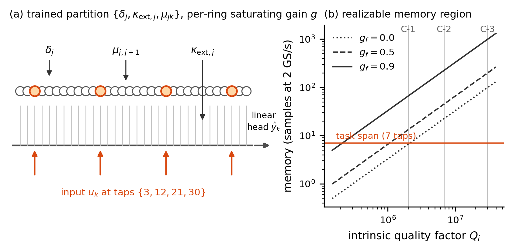
Figure F1 — Architecture and realizable pole region. (a) The N = 32 coupled-ring chain (C-2 cell): trained parameter set {δ_j, κ_ext,j, μ_j,j+1} (ring detunings, bus couplings, inter-ring couplings), with the resolved four-tap input map B = {3, 12, 21, 30} (§3, §5.7). (b) Realizable memory (samples at 2 GS/s) versus intrinsic Q at gain fractions g_f ∈ {0, 0.5, 0.9}, the three registered cells (C-1 foundry-floor, C-2 headline, C-3 aspirational), and the 7-tap task-span line — why the operating point carries gain: at g_f = 0 the foundry-floor cell sits at the task-span line; at the registered g_f = 0.9 all three cells clear it with margin.
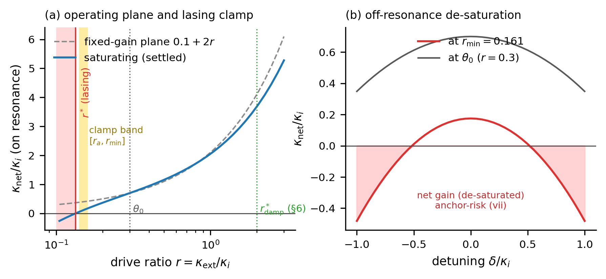
Figure F2 — The dissipative substrate’s operating map. (a) Settled saturating net loss κ_net(r) versus the fixed-gain plane, the lasing crossing r*, the registered clamp band (r_min = 0.1606 with margin m_κ = 0.05, Δr = 0.02), and the initialization point θ₀. (b) Off-resonance de-saturation at r_min versus θ₀ — the quantified anchor-risk (vii): a detuned ring at r_min reaches κ_net = −0.48 κ_i, which is why the clamp is referenced on-resonance (§3.6).
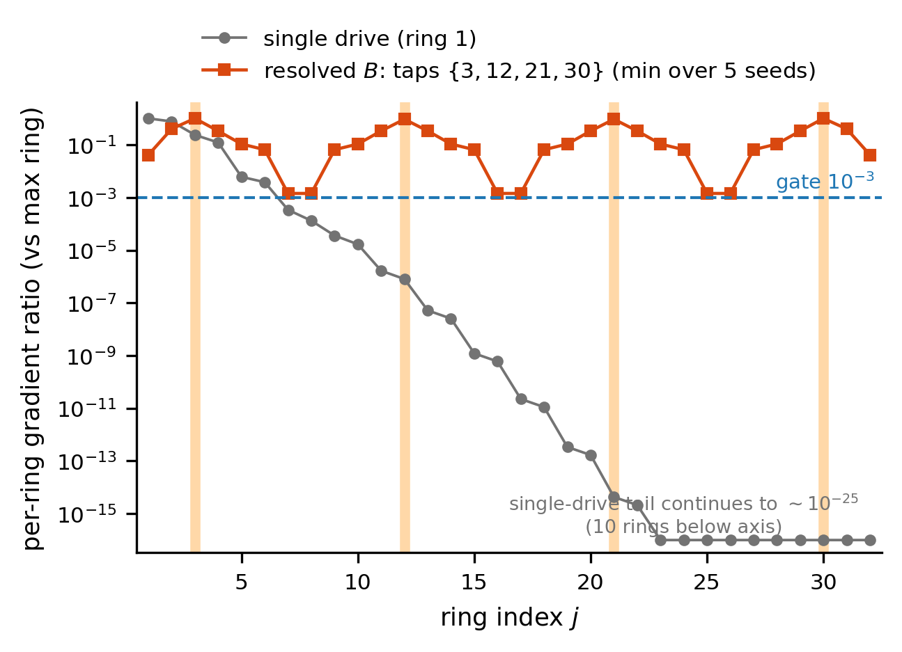
Figure F3 — Controllability is a first-class constraint. Per-ring gradient magnitude (relative to the maximum ring) under a single input tap versus the resolved four-tap map. The single-drive profile collapses geometrically with distance from the drive (ring 32 sits ~25 orders below the maximum; participation {1, 3, 5}/32 rings above {10⁻¹, 10⁻², 10⁻³}); the resolved B = {3, 12, 21, 30} puts all 32 rings above the pre-registered 10⁻³ gate (worst ring 1.42 × 10⁻³, min over five drive seeds).
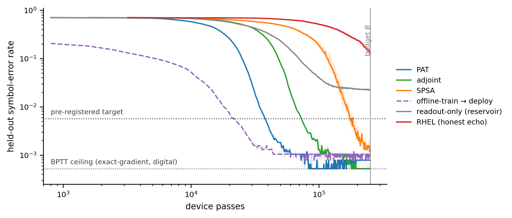
Figure F4 — Sample efficiency to target (the headline). Median held-out SER versus physical device passes at C-2 (8 seeds; shaded IQR): PAT, recurrent adjoint, SPSA, RHEL (honest echo, censored at budget), the readout-only reservoir baseline, and the offline-deploy arm (deployed pre-trained, so it starts low; head recalibration only). Dotted lines mark the BPTT-on-substrate ceiling (device passes = 0 by the PR-7 convention, drawn as a level only) and the pre-registered target SER = 5.65 × 10⁻³; the vertical line is the device-pass budget B = 252,800.
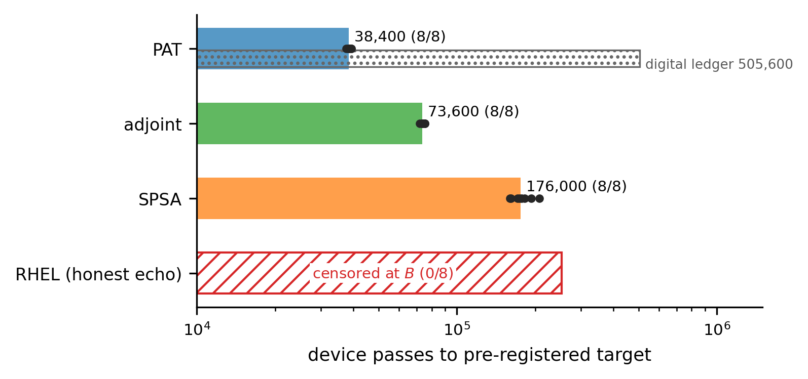
Figure F5 — Ranking at matched device-pass cost. Median device passes to target (per-seed dots) with the digital-computation side-ledger co-reported (hatched; PAT’s twin backward = 505,600 digital passes): PAT 38,400 < adjoint 73,600 < SPSA 176,000; RHEL censored 0/8. The ranking answers the pre-registered promotion question in the negative: neither exact method beats both workhorses.
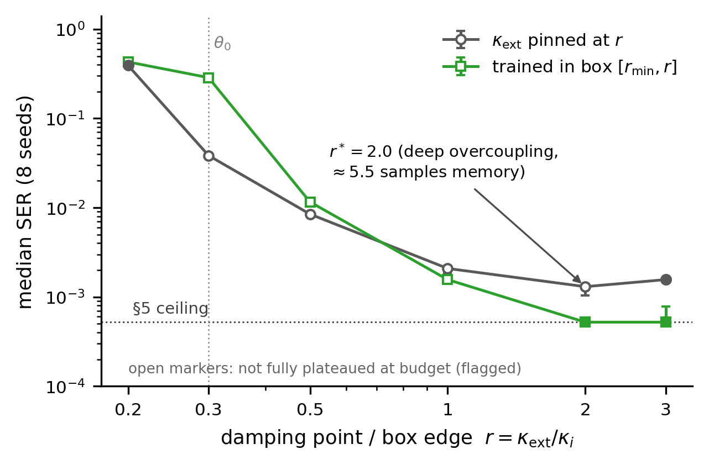
Figure F6 — Damping is a first-order design knob. Final SER versus uniform pinned overcoupling r (plateaued endpoints spanning ×302), the deep-overcoupling optimum r* = 2.0 (κ_net ≈ 4.1 κ_i — excess memory is harmful for this task), and the trainable-κ_ext box (R-ii): boxes containing r* train to the 5 × 10⁻⁴ ceiling, beating every uniform pin — the heterogeneous damping profile is found by training, not designed. Dashed red: the T-A-L transfer test (14-tap span, eval-F; PR-17) — the registered prediction that the optimum moves to lighter damping failed; the harder task raises the floor everywhere while the optimum stays in the deep-overcoupling plateau (r = 2–3 within 13%), so the heavy-damping optimum is robust to a ×2 task-memory span (§6).
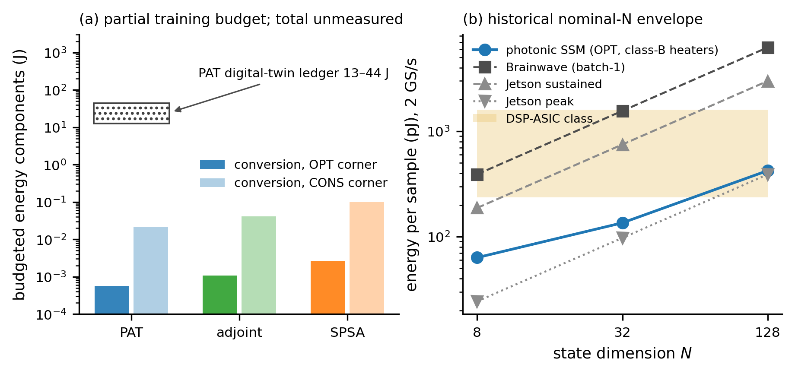
Figure F7 — The systems envelope. (a) Training-energy inversion: SPSA trains the C-2 cell all-in for ~2.6 mJ (optimistic conversion accounting; 99 mJ conservative) while PAT’s device side is 0.57 mJ but its digital twin backward costs 13–44 J — the energy metric inverts the device-pass ranking. (b) Inference energy per sample versus state dimension N at 2 GS/s against the named digital baselines: the photonic envelope (optimistic corner, low-power heater class) clears the measured embedded-GPU (Jetson sustained) and Brainwave batch-1 lines at all N and enters the DSP-ASIC class at N = 128 — while never beating the Jetson peak-spec line, which we report alongside: the niche is conditional, as §7 states.
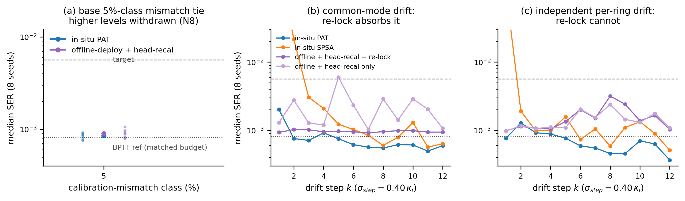
Figure F8 — What breaks the offline tie (pre-registered follow-ups, §5.5; eval-F protocol of record, PR-17). (a) Calibration-mismatch sweep, 5→30%-class (8 seeds): in-situ PAT (8.4–8.6 × 10⁻⁴) and offline-deploy (8.7–9.0 × 10⁻⁴) are statistically indistinguishable at every level (ratio ≤ 1.05, every paired-bootstrap CI including zero) — crossover m* = none. (b) Deploy-then-drift, common-mode regime (σ_step = 0.40 κ_i per step on all detunings coherently): the offline laser re-lock absorbs the drift and keeps pace (ratio 1.34, CI including zero). (c) Independent per-ring drift: the re-lock cannot fix per-ring pole scatter; in-situ retraining holds near-ceiling while the re-locking offline baseline degrades with accumulated drift — time-integrated ratio 2.42×, difference-CI [+0.71, +2.84] × 10⁻³ excluding zero: both conditions of the frozen decision rule (PR-16: median ratio ≥ 2 AND difference-CI excludes 0) hold (the coarse-floor estimate, 1.84×, sat below the bar and is co-reported per the frozen both-protocols rule; coarse and fine score the same bit-identical trajectories at two floors — ledger §17.8; the ratio’s own CI [1.7, 4.6] is reported in §5.5). The in-situ SPSA curve is context only (per-step re-convergence transient; no registered verdict involves it). Dashed/dotted lines: the pre-registered target and the matched-budget BPTT reference (31,600 updates, the arms’ own training budget — PR-17 §17.8; the bake-off’s 12,000-update ceiling is protocol-local to §5.3 and is not drawn).
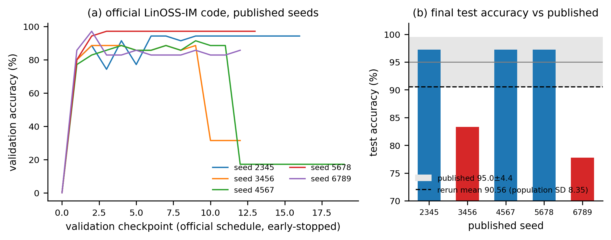
Figure S1 — The benchmark anchor we do not use (G3 dossier, §8.3). (a) Validation-accuracy trajectories of the official LinOSS-IM code on the published EigenWorms seeds (our rerun, 2026 stack): two of five seeds visibly collapse mid-training (the fp32 absorbing-zero-gradient mode). (b) Final test accuracy per seed against the published 95.0 ± 4.4%: rerun mean 90.56%, σ 9.34 ≈ 2.1× the published dispersion (per-seed 97.22 / 83.33 / 97.22 / 97.22 / 77.78).
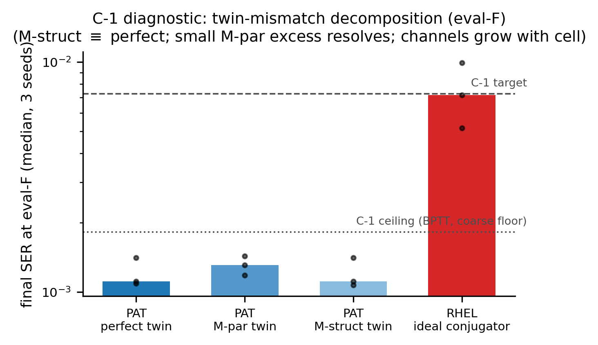
Figure S2 — Twin-mismatch decomposition at C-1 (§5.6; eval-F). Final SER (3 seeds) for PAT with a perfect twin, a parametric-error (M-par) twin, and a structural-omission (M-struct) twin: perfect and M-struct land identically (1.11 × 10⁻³) while the fine floor resolves a small M-par excess (1.31 × 10⁻³, +18% — invisible at the coarse floor). Mismatch channels remain ≈ 0 at this cell only (the dropped gain channel grows to ~8% of gradient direction at C-2, §5.6). The idealized-conjugator RHEL control clears the C-1 target with a thin margin (7.2 vs 7.3 × 10⁻³), localizing RHEL’s C-2 failure to echo physics, not mechanics.
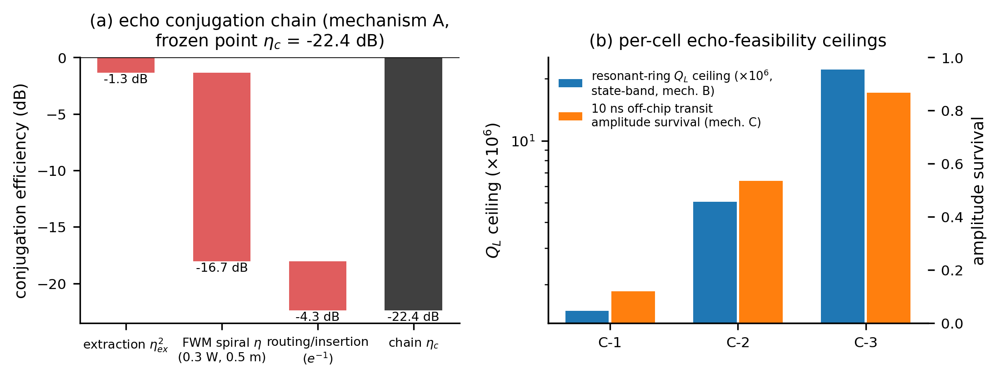
Figure S3 — The concrete echo sub-model (PR-11, §4). (a) Conjugation-chain waterfall at the frozen operating point (mechanism A, shared spiral bank): ring-port extraction η_ex², single-pass χ³-FWM spiral conversion (0.3 W pump, 0.5 m), routing/insertion — chain η_c = −22.4 dB per conjugation. (b) Per-cell feasibility ceilings for the alternative mechanisms: resonant-ring loaded-Q ceiling from the state bandwidth (mechanism B) and 10-ns off-chip transit amplitude survival (mechanism C).
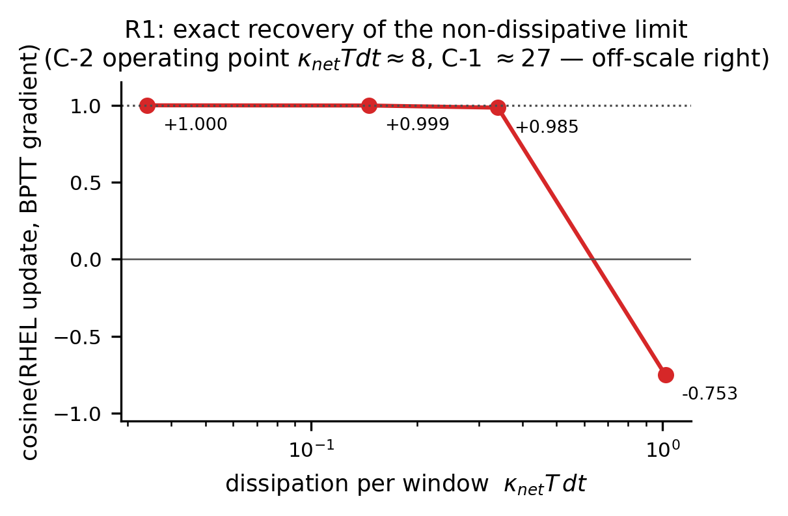
Figure S5 — RHEL recovers its own theorem’s limit (§5.4). Cosine between the RHEL update and the exact BPTT gradient as the substrate is made progressively less dissipative: −0.75 at κ_net T dt ≈ 1.0, monotonically to +1.0000 at 0.03 — exact recovery of the non-dissipative limit. The registered C-2 operating point sits at κ_net T dt ≈ 8 (the C-1 control cell at ≈ 27), far beyond the anti-aligned regime: the C-2 failure is dissipative-echo bias, not implementation error.
github.com/LTalandier/Project_SSM